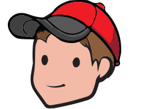

Hometown: Underhill, Vt.
Hobbies: Music, Star-gazing, Spelunking
Favorite Driver: Joey Tomaino
Notes: The youngest driver on the team, and in the entire racing series. Finished 2nd to his father, Dan, in his very first race. Current contender for the 2014 Rookie of the Year honors.